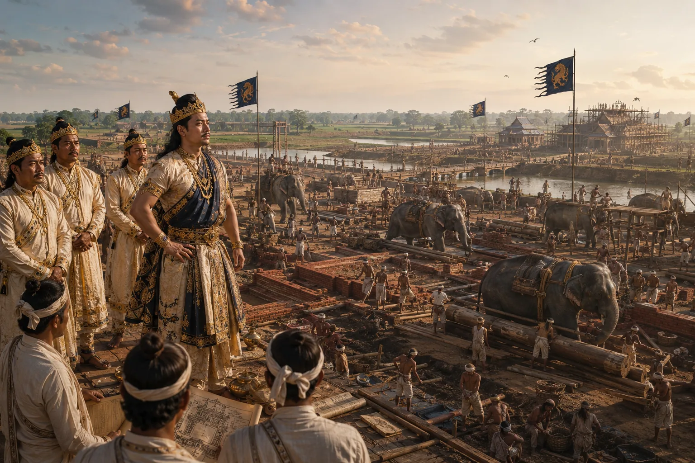

Founding and Construction of Capital City Rangpur and Joysagar
1698–1705 · The Tungkhungia kings

Constructs the glorious capital Rangpur ('City of Joy'), excavates the massive Joysagar tank in memory of mother Joymoti, and builds Namdang stone bridge.
Sources have not yet been catalogued for this record.
People: Ghanashyam Khanikar, Rudra Singha (Sukhrungphaa)
Open this scene in the interactive archive · Follow this event on MAP